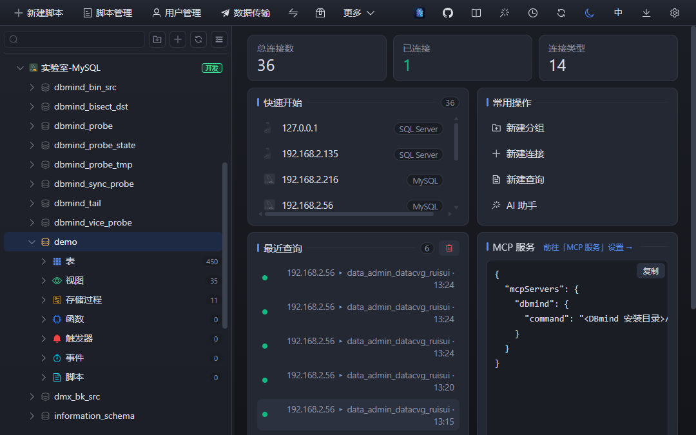
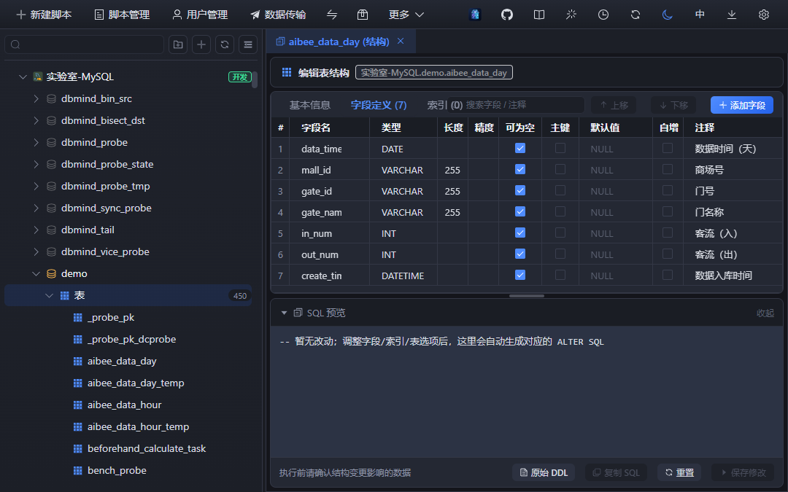

The documentation is currently available in Chinese only.
什么是 DBmind？
工作台：左侧连接树，右侧最近查询、查询趋势与数据工具 DBmind = Database + Mind ：给数据库装上「大脑」的统一管理工作台。它把连接管理、SQL 编辑、数据表格、AI 助手、事务与安全护栏放进同一个客户端，开箱即用。
DBmind 不绑定某一种数据库：MySQL、PostgreSQL、Oracle、SQL Server、ClickHouse、Redis、MongoDB、达梦、人大金仓等 17+ 种数据源共用一套操作习惯 —— 学一次，到处用。
数据边界 ：本地运行、默认不联网；AI 默认关闭，只在你配好模型之后才工作 —— 它到底带走了什么，逐项写在
AI 会把什么发给模型 ，不是一句「我们重视隐私」。
核心特性一览
⌨️ 智能 SQL 编辑器 VS Code 同款内核：上下文补全、格式化、分块执行、执行历史。
🧠 AI 同事 解释 / 优化 / 修错 / 诊断 / 问答之外，还能自主排查：自己巡检、给索引建议、看同步备份状态，改动做成变更单等你批准。
🛡️ 事务模式 写语句不再自动提交：先改、自查、回滚或提交，安全闭环。
✏️ 结果集直接编辑 双击改值、缓冲提交，快照守卫绝不改错行。
⚡ 千万级结果集 虚拟滚动 + 服务端分页 + 18× 压缩，首屏 <1s。
📊 透视与导出 框选即汇总、分组下钻；CSV / Excel / JSON / INSERT 导出。
🧱 表结构与对象 字段 / 索引 / 注释直接改，执行前先看完整 ALTER；视图、过程、触发器可转 ALTER 编辑。
🧑💼 用户与权限 用户 / 角色按引擎适配，权限分层勾选，勾一次即预览 GRANT / REVOKE 差量。
🗺️ ER 关系图 命名约定 + 真外键推断关系，拖拽缩放，导出 PNG / SVG。
📈 监控与运维 会话 / 锁 / 指标，终止会话；备份还原、生成测试数据、全局对象搜索。
支持的数据源
17 种数据源共用一套操作习惯：同一个编辑器、同一张结果表格、同一套事务按钮与对象树 —— 换库不用换脑子。JDBC 驱动按需下载，首次连接对应类型时自动取，内网可指向私有镜像。
关系型 · 10 种 MySQL、MariaDB、PostgreSQL、人大金仓 KingbaseES、Oracle、SQL Server、IBM Db2、达梦 DM、Apache Derby、H2
分析型 · 2 种 ClickHouse、Apache Doris —— 连接分组里单独标为 OLAP，库 / 表 / 分区语义按各自引擎处理，不和关系型混在一起
嵌入式 / 文件 · 2 种 SQLite、DuckDB —— 直接打开本地文件，不需要服务端，也不需要 Java 宿主
NoSQL · 3 种 Redis、MongoDB、Elasticsearch —— 连接、库 / 集合、文档浏览与监控按原生语义走
做不到的会明说，不装作人人满分 ：
会话事务 ：走 JDBC 宿主的引擎都支持（改完自查、回滚或提交）；SQLite 用内核原生驱动，没有会话级事务，事务按钮直接不渲染，不会点了没反应用户与权限 ：MySQL / MariaDB / PostgreSQL / 金仓 / SQL Server / Oracle / ClickHouse / Doris / H2 等按各自方言给出用户、角色与分层权限；Db2、Derby 的用户由数据库外部认证提供，界面如实说明「这里没有可管理的用户」，而不是给一张空表服务监控 ：MySQL / MariaDB / PostgreSQL / 金仓 / SQL Server / ClickHouse / Doris 有会话、锁与库级指标；其余引擎没有监控接口，返回「不支持 + 原因」，不画空图表结构编辑 ：能力按引擎下发，做不到的项直接置灰并说明原因（比如部分引擎不支持字段改名、ClickHouse / Doris 的表选项建表后不可改）；SQLite 只允许改列名数据传输 ：关系型与分析型全部支持；SQLite / DuckDB / H2 / Derby 与三种 NoSQL 没有对端写入通道，入口不出现DDL 查看 ：能原生取到定义的引擎直接给；Db2 / Derby 按列元数据自拼一份 —— 宁可自拼，也不让「查看 DDL」点开是空的
下载与安装
国内推荐 Gitee Releases （直连，快）；海外网络、或个别没同步的大包（如 Linux AppImage），去 GitHub Releases 取。双击安装，开箱即用。
Windows ：安装向导 setup.exe（推荐）、企业批量部署用 .msi、不想安装就用免安装 portable.zip（解压即用，不写注册表）macOS ：Apple 芯片与 Intel 各一个 .dmg；未公证的 App 首次打开会被系统拦一次，按 DMG 里的说明到「隐私与安全性 → 仍要打开」即可，不用 sudoLinux ：Debian / Ubuntu 用 .deb（带开始菜单项），其余发行版用 .AppImage（chmod +x 后直接运行）四种形态同一套内核 ：桌面客户端、浏览器打开的 Web 版、命令行 dbmind、以及给 AI 客户端用的 MCP 服务器不用注册、不用云端 ：没有账号体系，不采集使用数据；首次连接某类型数据库时才下载对应驱动本地状态集中一处 ：默认 ~/.dbmind，换机器把目录搬过去就是完整迁移（详见数据目录与自愈 ）
macOS 首次打开 ：未公证的 App 一定会被系统拦一次 —— 点「好」之后到
「系统设置 → 隐私与安全性」点「仍要打开 」即可，不用 sudo、不用敲命令
（DMG 里也附了这份说明）。想一次都不弹：brew install --cask --no-quarantine rick-works/tap/dbmind，
或用 curl 下载 —— 那个「已下载」标记是浏览器打的，换个下载方式系统就不会检查。
创建第一个连接
左侧树点「新建连接 」，选类型，填主机 / 端口 / 库 / 账号口令；文件型数据库（SQLite / DuckDB / H2 / Derby）直接选文件或目录
口令不回显 ：保存后再打开只显示「已保存，留空不改」——留空表示沿用旧密码，不是清空分组 / 颜色 / 环境 ：连接可按分组收纳，支持自定义颜色；环境标记里选「生产」就获得 PROD 红徽章与全套写保护SSH 隧道 ：跳板机支持口令或私钥（私钥可带 passphrase），端口默认 22 —— 数据库只在跳板机内网可达时用它；主机公钥走 ~/.ssh/known_hosts 加应用自己的钉扎记录，指纹变了会拒绝而不是静默连上连接级超时 ：默认连接 10s / 读 600s / 写 300s，字符集 UTF-8，都可按连接单独调；连接数上限也按连接配（默认由程序自适应）手改连接串 ：需要塞特殊参数时可直接写完整 JDBC URL，覆盖默认拼接；驱动是否就绪、下载进度都显示在弹窗底部，缺驱动时先下完再测测试连接 ：先测再存；打开连接时只用一次「列库」请求验证连通，失败才回头取具体原因（不再额外多打一次握手）
执行第一条 SQL
-- 光标在这条语句内时，Ctrl+Enter 只执行这一条
SELECT * FROM orders WHERE created_at > :dt;
语句里的 :name 变量从变量库取值：有默认值直接执行，缺的才弹窗补填（见模板变量 ）
多语句脚本自动分块执行，每段独立计时
四种用法：桌面 / Web / CLI / MCP
四个入口共用同一个内核、同一份本地数据 （默认 ~/.dbmind）：连接与设置改一处四端都看得见，可以同时开着跑。安装包把它们放在同一目录，共用一份 jre/ 与 agents/。
dbmind-desktop.exe 桌面版（双击）
dbmind-web.exe 浏览器版
dbmind.exe 命令行
dbmind-mcp.exe 给 AI 客户端的 MCP 服务器桌面版 ：双击 dbmind-desktop.exe，开始菜单里也有入口。内置内核，端口自动挑 20361 附近，不需要任何参数。
Web 版 ：先进入安装目录再启动 —— --dist 是相对路径：
cd D:\app\DBmind
.\dbmind-web.exe --port 8787 --dist web
浏览器打开 http://127.0.0.1:8787；要让局域网访问再加 --host 0.0.0.0
别用 20361 ：那是桌面版的地盘，两边抢同一个端口只会互相添乱--dist web 必须带：默认值是 ./frontend/dist（开发时的仓库路径），装好的目录里没有它，漏了就是整站 404
CLI ：把安装目录加进 PATH（setx PATH "$env:PATH;D:\app\DBmind"），之后在任意位置可用。
dbmind status # 环境、连接数、驱动、安全开关
dbmind types # 支持的数据源类型
dbmind conn list # 连接清单
dbmind test --conn 测试 # 自检（耗时 + 版本）
dbmind tables --conn 测试 # 表 / 视图（--refresh 绕过缓存）
dbmind columns --conn 测试 --table orders # 表结构
dbmind query --conn 测试 --sql "select 1" # 执行 SQL
dbmind query --conn 测试 --file q.sql --json # 读文件、JSON 输出
dbmind history --limit 20 # 查询历史
dbmind setting list # 读写设置
退出码固定 ：0 成功、2 连接不存在、3 参数或 SQL 非法、4 被安全策略拦下、5 超时、130 取消 —— 脚本可以直接分支处理--password 会留在命令历史里，日常查询用已保存的连接名
MCP ：走 stdio，本身不用手动启动，配给支持 MCP 的 AI 客户端即可。
{ "mcpServers": { "dbmind": { "command": "D:\\app\\DBmind\\dbmind-mcp.exe" } } }
默认只读 ；要放开写入给命令加 --allow-write（仍受只读连接、生产保护与危险语句拦截约束）
工具清单：列连接、列类型、列表 / 视图、搜表、看表结构、执行查询、取消查询、查询历史、服务器信息
Codex 写进 ~/.codex/config.toml：[mcp_servers.dbmind] 加一行 command = 'D:\app\DBmind\dbmind-mcp.exe'
不用装 JDK ：自带的 jre/ 会被四个端自动采用（版本 ≥17 才用）；只有把 exe 挪出安装目录、或想指定别的运行时，才需要设 DBMIND_JAVA。
MCP 服务（给 AI 客户端用）
DBmind 除了自带 AI 助手，还能把「连接 + 查库」这两件事以 MCP（Model Context Protocol） 工具的形式交给外部 AI 客户端：Claude Desktop、Cursor、Codex 都能直接查你本地的库。走的是 stdio，不监听端口，也不需要联网中转。
在客户端的 MCP 配置里加一段即可（command 换成你自己的安装路径，客户端内可一键复制）：
{ "mcpServers": { "dbmind": { "command": "<DBmind 安装目录>/dbmind-mcp.exe" } } }Codex 写在 ~/.codex/config.toml：[mcp_servers.dbmind] + command = '...'。重启客户端后，AI 就能看到下面这 10 个工具：
dbmind_list_connections 列出已配置的连接（不含口令），拿到 id 给其它工具用dbmind_list_types 列出支持的数据源类型与运行时能力dbmind_list_databases 列出连接上的库；连接已绑库时附带模式清单dbmind_list_tables 列出某个库下的表与视图（未绑库时必须带上库名）dbmind_search_tables 按关键字模糊搜表 / 视图，最多 50 条dbmind_describe_table 看表结构：列名、类型、可空、主键、默认值dbmind_execute_query 执行 SQL；默认只读，行数与超时受设置页限制dbmind_cancel_query 用 executionId 取消正在跑的查询dbmind_list_history 看近期查询历史（含失败与取消）dbmind_server_info 看服务版本、AI 写入 / 生产保护等开关状态
默认只读 ：要写数据得给进程加 --allow-write，加上之后仍然受「只读连接 / 生产保护 / 危险语句拦截」三道闸门约束，开关在 设置 → 安全与会话 命中脱敏规则的列 返回摘要或密文，并标出 maskedColumns，见 数据脱敏 改完立即生效 ：设置页的「默认连接 / 默认库 / 单次最大行数（默认 2000）/ 默认超时（默认 30 秒）/ 三类工具开关」存在后端，MCP 壳每次调用现读，不用重启客户端
SQL 编辑器
SQL 编辑器：补全、格式化、分块执行，结果与行数耗时并列
上下文补全 ：按光标位置提示表 / 列 / 关键字，库结构变更后实时刷新；补全只在需要时弹，不打断输入分块执行 ：光标停在哪条语句就只跑哪条；有选区跑选区；「执行全部」按分号切块依次跑，每段独立计时 ，慢在哪一段一眼看出格式化 ：整篇或仅选中段一键整理，方言按当前连接自动识别批量改写 ：选中段转大写 / 转小写 / 压成一行；把选中的多行值复制成 IN ('a','b',…) 列表执行历史 ：语句、目标库、耗时、成功与否都留在本地，下拉一键回填；首页还给近 7 天趋势停止执行 ：长查询一键取消，不等超时；取消后如实说明是「已取消」而不是「失败」多脚本页签 ：一个窗口开多份脚本，各自记录所属连接；换连接不会把别的脚本也切走
脚本管理
顶栏「脚本管理」是本机脚本库：把经常要跑的 SQL 存成脚本集中管理，比片段库更适合「成套的查询 / 例行巡检脚本」这类成体系的 SQL。
新建 / 重命名 / 删除 都在列表里完成，改名与删除按真实脚本 id 定位，改完立刻生效；内容自动保存，不用记得按 Ctrl+S打开即编辑 ：双击（或右键打开）脚本会开成一个普通 SQL 页签，补全、格式化、分块执行、模板变量全部可用 —— 脚本库只是「存放处」，编辑体验与手写脚本完全一致与片段 / 执行历史的分工 ：临时贴一段用「片段」；查「那天跑过什么」用「执行历史」；要长期维护、反复修改的成套 SQL 放「脚本管理」存本机 ：脚本落在本地数据目录，跟着 ~/.dbmind 一起迁移，不经过任何云端
快捷键
默认键位如下，全部可在「设置 → 快捷键」里改（存在本机，不进配置文件）。
执行当前语句 ：Ctrl+Enter 执行全部 ：Ctrl+Shift+Enter 停止执行 ：Ctrl+F2格式化 ：Shift+Alt+F 注释 / 取消注释 ：Ctrl+/ 保存 ：Ctrl+S 新建脚本 ：Ctrl+N转大写 / 转小写 ：Ctrl+Shift+U / Ctrl+Shift+L 压成一行 ：Ctrl+Shift+M复制为 IN 列表 ：Ctrl+Shift+X 复制单行 ：Alt+Shift+L 选中当前语句 ：Ctrl+Shift+Y 保存片段 / 插入片段 ：右键菜单（存本机，跨会话保留）结果表格 ：刷新 F5、保存改动 Ctrl+S、加行 Alt+Insert、删行 Ctrl+Delete、回退 Ctrl+Shift+Z、向下填充 Ctrl+D、清空单元格 Delete、自适应列宽 Alt+Shift+A
AI 助手
AI 助手：结论、数据概况与建议追问
六大动作 ：解释、优化、改写、修错、诊断、自由对话 —— 选中 SQL 就能一键让它动手，修错会自动带上完整错误上下文，结果直接回填编辑器自主排查 ：打开开关，它自己调工具查库 —— 巡检表结构、给出该加的索引、看同步与备份状态、只读试跑一遍；多轮能接着上一轮的结论往下做，问两张表就展开两张变更单 ：要动数据或结构的动作统一生成变更单，批准才执行、高危再确认一次、执行完还能撤销 —— 执行权始终在人手里记忆与记录 ：说一句「记住：本库金额单位是分」，下次在同一个库提问自动带上（区分「你说过 / AI 推断」，随时可删）；对话有记录，能续上一轮接着说用量与预算 ：每条回答脚注消耗的 token；大库上下文按预算裁剪，库级问题给全库清单（表名 + 注释）而不是整库列结构 —— 实测同一条修复从 2345 降到 956 prompt tokens
安全边界 ：AI 给出的 SQL 会先「看执行计划、试跑一次」再由你决定是否执行；写操作默认阻断，结构 / 数据变更要批准变更单（高危二次确认），生产库连接还要再过一道写确认。
AI 会把什么发给模型
担心数据，多半是「不知道到底发了什么」。这里不写「我们重视隐私」，直接把一次请求摊开 —— 你自己判断能不能接外部模型。DBmind 没有任何中转服务器 ：请求从本机直连你在设置里填的接口地址（OpenAI 兼容协议），AI 默认关闭，不配模型时一个字节都不会发。
会发 · 你的问题 ：提问原文、当前 SQL、报错文本，加最近 6 条对话（合计上限 6000 字符，超长的一条掐中间）会发 · 表结构 ：表名 + 列名 / 类型 / 是否可空 / 默认值 / 主键（不含列注释 ）；点名或命中的表最多 40 张，没点名默认前 8 张会发 · 一行样例 ：每张展开的表 1 行真实数据 ，最多前 20 列，每个值截到 24 字符 —— 模型靠它判断日期格式与状态枚举，才不会把 PAID 当成 1可关闭 · 字段脱敏 ：设置 →「数据脱敏」里给指定表的指定列配规则（支持 *_phone 这类通配），命中列换成 MD5 / SHA-256 摘要 或 AES-256 密文 （如 f3a9c2…）；一份规则、四个开关：发给 AI 的内容（样例行 + 智能体只读结果）、MCP 服务返回给外部客户端的数据、结果表格的显示（只影响显示）、导出的文件（CSV / Excel / JSON / SQL 里落盘的就是打码值）。表名 / 列名 / 表注释不脱敏 （脱了模型就不知道该查哪张表），你在 SQL 里手写的字面量也不脱敏会发 · 全库清单 ：只在你问「这个库是干嘛的」这类库级问题时，给表名 + 表注释，一行数据都不带会发 · 你自己配过的 ：团队术语与采纳示例、长期记忆（你说过的口径）、知识库命中片段（每段 ≤900 字符并标注来源）；没配就是空的不发 · 整表数据与结果集 ：只有上面那 1 行样例。唯一例外是「自主排查」——它执行的只读 SQL 最多返回 100 行、裁到 3200 字符进入对话，它要「自己看数据」就得付这个代价，这一点写在明面上不发 · 密码与密钥 ：连接密码、SSH 口令、API Key 只存本机 ~/.dbmind/dbmind.db，接口只回「已保存」、不回显不发 · 遥测 ：没有使用统计、没有崩溃上报、不请求 DBmind 的任何服务器（「检查更新」只读版本号，与 AI 无关）
连样例都不想发？先开字段脱敏 ：设置 →「数据脱敏」按「表 + 列」配规则，手机号变 f3a9c2…（MD5）、换成 AES 密文也一样，模型照样写得出对的 SQL，但永远拿不回明文；选了 AES 的话密钥就在本机，你想解回去随时能解。「加入常见敏感列」能一键补齐手机号 / 身份证 / 邮箱 / 密码 / Token / 银行卡这类列名，改完下一次提问立即生效。
再狠一点：把端点锁死在内网 ：设置里打开「仅本地模型」，只要接口地址不是内网 / 本机就直接拒绝，并报出被拦的 host。放行回环、IPv4 私有段（10 / 172.16–31 / 192.168 / 169.254）、IPv6 ULA、.local / .internal / .lan / .corp / .intra 后缀，以及 DBMIND_AI_LOCAL_HOSTS 里你自己加的域名 —— 内网起的 Ollama / vLLM 照样能用，云端模型彻底出不去。对话与知识库向量化都 受这条约束，且是硬拦，不是只在文档里生效。
【目标数据库】类型 MYSQL ｜ 版本 5.7.42 ｜ 标识符引用风格 反引号 ｜ 分页写法 `limit {offset}, {limit}`
【表清单】共 42 张表，仅展开用到的那几张（需要其它表的字段请先说明表名）
【表 orders】
id BIGINT not null 主键
status VARCHAR(16) not null default 'NEW'
amount BIGINT not null default 0
created_at DATETIME not null
样例：id=10231, status=PAID, amount=19900, created_at=2026-10-30 12:00:00一个真实请求大概就这么长：模型能看出类型、枚举与日期格式，看不出你还有哪些列、哪些行。若前 20 列里就有手机号、身份证号，它们会随之发出 —— 介意就把端点锁在内网。开工前想先看规模 ：界面上的「这次请求花在哪」用的正是一次模型都不调的预览接口，会告诉你这次要发多少 token、各段各占多少。
智能问数
用一句中文直接问数据库要答案：「近三个月每天销售额多少？」「哪个门店客流最高？」——AI 挑表、写 SQL、真跑一遍，给出数字、图表和一句基于真实结果集的结论，全程你看得见每一步。
先锁表再写 SQL ：问数沿着你选的连接 / 数据库 / 模式工作；问题里的业务词（销售、客流、会员…）会自动匹配表名与表注释，锁定 3~12 张候选表（点名的表全收，不设上限），避免在几百张表里瞎猜表名数字是真的 ：AI 只负责生成 SQL，查询在你配的连接上真实执行；结论句里出现的每个数字都来自结果集本身，明细表格就在下面，逐格可核对图表本地切换 ：柱状 / 折线 / 面积 / 饼图 / 环形 / 散点 / 热力 / 漏斗 / 仪表盘随时换，不重新问模型、不花 token；结果一键导出 CSV（带 BOM，Excel 打开中文不乱码），SQL 可一键插进编辑器继续加工问不清楚会先反问 ：缺时间范围、口径不明时不硬答，给出 2~3 个自然的追问选项，点一下接着查；追问延续同一份上下文，不用重新交代背景过程透明可停 ：「选表思路」会解释这次为什么挑这几张表；生成中可随时点停止；回答尾部照例标注本次消耗的 token数据边界与 AI 助手一致 ：只发表结构、样例值与你的问题（逐项见AI 会把什么发给模型 ），行数据不整表外发
结果表格与数据编辑
表数据浏览：搜索、分页与导出
虚拟滚动 ：百万行丝滑滚动不卡顿，单元格完整内容悬浮查看；列宽可一键自适应（Alt+Shift+A）双击改值 ：改动先进缓冲、不立刻发请求；底栏汇总「改了几行」，确认后一次批量提交，Ctrl+Z 可逐步回退行操作 ：Alt+Insert 加行、Ctrl+Delete 删行、Ctrl+D 把上一格的值向下填充、Delete 清空单元格快照守卫 ：翻页或重跑后行号基准变了，旧缓冲自动作废并提示「缓冲已失效」—— 宁可让你重改一次，也不改错行联表编辑 ：JOIN 结果要改哪张表由你指定，工具不替猜列归属；带主键的表优先用主键定位，没有主键才全列匹配行数上限与超时 ：默认不限制返回行数（0 = 不限），可在设置里收到 100 ~ 100000 行；单语句超时默认 300 秒、可调 1 ~ 600 秒响应压缩 ：大结果集压缩后传输（实测 4.2 MB → 233 KB），总数异步统计，不阻塞首屏复制为 （选中后右键）：CSV / JSON / Markdown / IN (...) / INSERT / UPDATE / DELETE —— 选一列直接得到 IN (\n 'a',\n 'b'\n)，字符串按目标方言转义，不用再手工补引号
事务模式
工具栏点「事务 」开启：本会话所有写语句不再自动提交，编辑器独占这条会话 ，别的页签借不走
事务内修改自己随时可查，其他会话看不到 —— 先改、先自查，再决定
满意「提交 」落地；不满意「回滚 」全部消失，什么都没发生
关页签 / 关窗口时若有未提交改动，先弹窗确认；关闭事务模式本身也会先回滚，不会把半截改动留在库里
开启 / 提交 / 回滚都进执行审计，事后能查到「谁在什么时候开的、滚没滚」
适用范围 ：走 JDBC 宿主的引擎都支持；SQLite 没有会话级事务，按钮直接不渲染（点了也不会有反应的地方，我们选择不显示）
对象浏览器

对象树：连接 → 数据库 → 表 / 视图 / 存储过程 / 函数 / 触发器 / 事件
层级按引擎来 ：连接 → 数据库 → Schema → 表 / 视图 / 存储过程 / 函数 / 触发器 / 事件；有 Schema 层的引擎（PostgreSQL、SQL Server、Oracle、Db2）多展开一层，没有的不会凭空造一层懒加载 + 悬停预取 ：鼠标在某条连接上停一下，后台先把下次要用的库清单取好并缓存，点箭头时立刻出库名 —— 展开不再是「转圈等握手」右键按对象给动作 ：表——查看数据 / 查看 DDL / 编辑结构 / 重命名 / 删除 / 查看 ER 图；库——新建查询 / 查看 ER 图；存储过程——执行（自动开脚本填好 CALL，参数按名字生成 :变量 占位符，执行时走模板变量弹窗取值）/ 查看定义 / 编辑；其余例程——查看定义 / 转 ALTER 编辑；用户——编辑 / 授权拖对象名进编辑器 ：按住树上的表 / 视图 / 存储过程 / 函数 / 触发器等节点拖进 SQL 编辑器，松手即写入光标处（有选区则替换选区），省掉手敲名字拼错的机会；双击仍是打开数据预览大库不迷路 ：右上「对象搜索」跨整个连接按名字找表 / 视图 / 存储过程，直接定位到树节点
表结构与对象

编辑表结构：字段定义逐列可改，下方实时生成 ALTER
字段表直接改 ：字段名、类型、长度 / 精度、可空、默认值、注释、索引，改完在下方实时生成 ALTER 语句先预览再执行 ：生成的是完整脚本（改类型 / 加列 / 删列 / 改默认值 / 改注释 / 重建索引），确认无误才落库改动有标记 ：修改行、新增行各自高亮，选中行整行染蓝，长表也不会改错行对象编辑 ：视图、存储过程、函数、触发器、事件右键「编辑」，取回定义转成 ALTER 送进编辑器（按连接方言自动格式化）；取不到定义时如实说「未能获取」，不塞一段猜的模板新建对象 ：新建表、新建索引、新建视图 / 触发器 / 过程都是表单先行 —— 填完先看生成的 DDL，确认再执行索引单独一页 ：增删索引字段、改唯一性与索引名，改动同样进 ALTER 预览；重建索引在支持的引擎上给可执行语句不支持的能力（如部分引擎的字段改名、表选项）会置灰并说明原因，不让人填完才报错
用户与权限
用户与权限：清单与就地操作
按引擎适配 ：MySQL / PostgreSQL / SQL Server / Oracle / ClickHouse / Doris / H2 等给出各自的用户与角色清单；外部认证的引擎（Db2、Derby）如实提示不可在这里管理，而不是给一张空表增删改都在界面上 ：新建用户 / 角色、改密码、删除，语句由方言生成；删除前提示会影响哪些对象分层权限矩阵 ：全局、服务器、数据库、Schema、表、例程按引擎实际层级出现（SQL Server 的 Schema 级与对象级各占一页），一格一个权限勾选即预览差量 ：底部 SQL 预览只显示「这一次改动」的 GRANT / REVOKE，取消勾选立刻变成对应撤销语句 —— 不是把全量权限重发一遍只提交变化 ：点「保存修改」只发差异部分，没动过的授权不受影响；保存后立即重新读取，界面里看到的就是库里现在的状态一个都不隐身 ：读回来的权限名即使不在预置清单里，也会作为一列显示并可取消 —— 宁可多显示一格，也不让某条授权在界面上「看不见」
监控与运维
服务监控：会话与实时指标
服务监控 ：当前会话、锁等待与库级指标集中显示，可疑会话可就地终止；覆盖 MySQL / MariaDB / PostgreSQL / 金仓 / SQL Server / ClickHouse / Doris，其余引擎如实返回「不支持 + 原因」备份 / 还原 ：按引擎原生工具导出与恢复（默认值、字符集、对象范围可配），进度与逐行日志在任务中心；失败时日志里能直接看到是哪一句报的错生成测试数据 ：按列类型批量造数（数值、字符串、日期各按类型生成），写进临时表或指定表，压测不用等业务造数对象搜索 ：不用一层层展开，直接在整个连接里搜表 / 视图 / 存储过程，按名字模糊匹配并定位到树节点表数据与 DDL 速看 ：右键「查看数据」直接出结果表格、「查看 DDL」出建表语句，不用先开编辑器写 SQL
任务中心
任务中心：历史任务与耗时 凡是「跑起来要等」的活都进任务中心：导出、导入、整库转储、数据对比、数据传输、备份 / 还原、生成测试数据。
后台执行 ：关掉弹窗、切到别的页签都不会中断；完成后系统通知，失败给原因进度与日志实时刷新 ：任务阶段（准备 / 读取 / 写入 / 收尾）、已处理行数、速率都能看到；任务日志最多保留 4000 行，够定位一次失败可停止 ：中途取消会真的停掉源端与目标端，不会「界面说停了、服务端还在跑」；取消后如实标为「已取消」，不报成写入失败产物可下载，也可丢弃 ：导出产物落在系统临时目录，取回后即删；过期自动清理终态记录有上限 ：结束的任务保留 30 分钟供查看，快照文件只留最新 500 份 —— 任务中心不会变成第二个垃圾场
数据目录与自愈
所有本地状态都在一个目录里：默认 ~/.dbmind（元数据库 dbmind.db、驱动缓存 drivers/、日志 logs/、任务快照 tasks/、导出临时目录），可用 DBMIND_HOME 改位置。
开机后台自愈 ：回收元数据库的空闲页（删了又写的表只把页挂回空闲链，文件不会自己变小）、清理超过 24 小时的装载残留临时文件、任务快照只留最新 500 份 —— 全部在后台线程做，失败只记日志，绝不影响启动和查询回收有门槛 ：空闲空间达到 8 MB 且占比超过 20% 才动手，避免为了几百 KB 反复重写整个库文件只还空洞，不删记录 ：查询历史与审计是用户数据，删不删只由「清空日志」按钮和保留策略决定，后台清扫一条都不动清空即回收 ：设置里点「清理缓存 / 清空日志」，当场把腾出来的空间还给文件系统，并回显释放了多少 MB实测效果 ：一个用了几个月的目录 1.5 GB → 223 MB，其中元数据库 805 MB → 54 MB
ER 关系图
库节点右键「查看 ER 图」：按命名约定（_id / _no / _code 等）与真实外键推断表间关系，没有外键的库也能画出骨架
两种来源分开标 ：真实外键优先，命名推断的连线标明置信度 —— 图好看不等于关系成立，哪条是猜的写清楚纯规则推断，不消耗模型 ：这一步不调 AI、零 token，任何时候都能开自动布局（从左到右分层）后可拖拽表卡片、滚轮缩放、空白处平移、按表 / 列搜索高亮
一键导出 PNG / SVG，直接贴进设计文档；导出用固定亮色配色，深色主题下截图也不会糊成一片
模板变量
把重复查询变成填空题：SQL 里写 :name 占位符，变量集中在工具条「变量」按钮里管理（名称 / 默认值 / 备注），编辑器里打 : 直接从变量库补全。
SELECT * FROM orders
WHERE dt = :dt AND org = :org;
有默认值不打扰 ：执行时变量库里有默认值的变量自动套用，不弹窗；缺的才弹窗补填，填过的值自动存入变量库 ，下次同变量不再询问怎么认变量 ：:name（字母 / 下划线开头，大小写不限，可含数字 / 下划线，匹配不区分大小写）；字符串字面量里的冒号不误判（'12:30' 安全），PostgreSQL 的 ::type 类型转换也不会被当成变量怎么拼值 ：函数（NOW()、COALESCE(a,b) 等）、纯数字、null（不分大小写）原样写入；其余按单引号字符串转义（内部的 ' 变成 ''）—— 不做字符串拼接式注入全局生效 ：变量库存本机，所有脚本页签共用；弹窗里留空的变量拒绝执行，不会悄悄塞一个空串进 SQL；同一个变量在语句里出现多次，用的是同一个值
SQL 片段库
选中 SQL → 右键「保存片段」，命名保存（没选中就存全文）；不给名字时默认取首行前 30 字 —— 下拉里的「存为片段」按钮已去掉，同一个动作不留两个入口
跨会话保留，最多 100 条；点顶部「片段」看列表，或右键「插入片段 »」挑一条：有选区就替换选区，否则插到光标处；「清空片段」在同个子菜单里
存在本机浏览器存储里，不跟随数据目录迁移 —— 换机器请用「导出」带走数据，或把常用 SQL 存成脚本页签
数据透视
结果表格里框选区域 → 一键汇总：计数 / 求和 / 均值 / 最小值 / 最大值 ，指标列只列数值列，不会让你对着字符串点「求和」
按列分组透视、按指标排序、TOP-N 只看前 10 / 20 / 50 / 100 组，再点开组看明细
纯前端计算 ：直接用已经取回的结果集在浏览器里累加，不再发 SQL、不占数据库资源 —— 分析一份刚查出来的数据，不会因此多压一次线上库分组结果最多保留 2000 组、下钻明细取前 10 列：超过就明确告诉你被截断，而不是悄悄少显示几行
数据质量
在首页「数据工具」点「质量规则 / 质量分析」，或从顶栏「数据治理」进同一个弹窗（页签：敏感数据 / 数据容量 / 质量规则 / 质量分析 / 巡检），顶部统一选「数据源 → 库 → 模式」。
16 种内置规则 ：非空、非空白、唯一、枚举、最大长度、最小长度、数值范围、格式、正则、空值率、常量列、空列、邮箱、手机号（11 位）、身份证（18 位）、银行卡（16~19 位数字）质量规则 ：先选表（自动载入已存规则）→「生成建议」让 AI 按列类型与字段名产出草稿，或手动「添加规则」；每条可设启用开关、字段、规则类型与参数、等级（高 / 中 / 低）、业务说明质量分析 ：范围可选全部已配置规则的表或单表；「开始分析」逐表扫描并显示 [i/n] 正在分析 …，可取消（当前表跑完就停）；结果给综合得分、通过 / 失败 / 异常 / 跳过的统计，以及每张表一行状态（存在问题 / 全部通过 / 已跳过 / 不支持 / 异常 / 未配置规则）能导出 ：「数据质量报告」导出 Excel 或 CSV（逐表逐规则明细，含违规行数）；「错误数据明细」按表看违规行，当前页或全部都能导，文件名带表名
导出与传输
数据传输：源目标配对与四步向导
导出格式 ：CSV / Excel / JSON；整库转储与脚本导出还提供 INSERT / UPDATE / DELETE 语句 与纯 DDL ，直接把数据变成可回放的 SQL导出没有行数上限 ：后端自己分页（每批 5 万行）往外写，几十万行的表也是后台稳稳跑完，不会因为「一次查太多」被内存拖死整库转储 ：CSV / Excel / JSON 一律打包成 zip（一个表一个文件），SQL 类输出直接给一个 .sql导入 ：CSV / JSON / Excel，按目标列类型转换（日期、数值、空值各按类型处理），每批写 200 行；单文件上限 256 MB，老式 .xls 明确不支持并提示另存为 .xlsx长任务后台跑 ：导出 / 整库转储 / 导入各自是独立任务，关窗口不中断，进度与日志在任务中心，完成有系统通知产物不占盘 ：导出文件落在系统临时目录，取回后即删导出也能脱敏 ：设置 →「数据脱敏」里打开「数据导出」后，命中规则的列写进文件时就是摘要 / 密文（生成 UPDATE / DELETE 脚本时主键列保持原文，否则语句定位不到行）
备份与还原
库级备份 / 还原直接在客户端里点出来：调各数据库官方原生的导出导入工具链 （mysqldump、pg_dump / pg_restore 等），格式与官方一致，不造私有轮子。
入口 ：连接（或库）右键 → 备份 / 还原，选目标与范围后开始；任务进任务中心，可以后台跑、完成后系统通知大文件稳 ：备份边收边写落盘，不再整块塞进内存；中途失败或取消不会留下半截的"假成功"文件取消是真取消 ：界面点了停止，后台的 dump / restore 进程跟着停，不会"界面显示已取消、进程还在偷偷跑完"还原有护栏 ：还原会覆盖目标库数据 —— 生产连接默认拦截，与全局安全护栏同一套口径；执行前想清楚，或临时关闭护栏前提 ：本机装有对应数据库的 dump / restore 命令行工具（连接时驱动装的是 JDBC 包，不含这些工具）
生成测试数据
建好表结构却没数据可玩？按表结构批量生成贴近真实的测试数据：行数你来定，每列的取值规则你来挑，写进目标表让联调、演示、性能测试立刻有东西可查。
按列定制规则 ：整数 / 小数给区间，字符串给长度、枚举集合或正则，日期给时间窗，还有自增序列与"从字典里挑"的枚举列 —— 类型与列约束（NOT NULL、唯一）自动对齐表结构行数自己定 ：从几十行冒烟到几十万行压测都行；大批量分批写入，进度在任务中心可见写入前看得到 ：生成的数据先预览再落地；目标表已有的数据不会被清掉，新行是追加进去的护栏照常 ：往生产连接灌数据默认拦截；给测试库灌之前确认连接的环境标记没标错
数据对比与传输
结构与数据对比：差异逐项列出
对比三种口径 ：只比结构、只比数据，或两者一起比；结构差异细到类型 / 长度 / 可空 / 默认值 / 主键 / 索引 / 外键数据对比 ：以主键 / 唯一键为基准逐行比，差异样本可调（10 ~ 500 行）；单侧最多约 200 万行参与，二进制列自动排除避免误判传输对象 ：表、视图、函数、存储过程、触发器、事件一次勾选；先出计划（目标端要建什么、写多少行）再执行三种写入模式 ：直接插入 insert、清空后插入 truncate_insert、按主键合并 upsert（引擎原生 upsert 可用时走原生，否则退化为「查后写」两段式）同实例走直拷 ：源与目标在同一实例时，直接让数据库自己 insert into … select …，数据根本不经过客户端 —— 20 万行 6 列实测 6 秒 ，走客户端管道是 239 秒跨实例也能快 ：自动按行数分片、多连接并发、传输链路压缩，同一份数据 239 秒 → 35 秒 ；并发数、分片数、行 / 字节限速都可调按表加过滤条件 ：同一批对象里，可以给某张表单独写 where 只搬一部分数据（按表名给条件）跨环境同步（开发 → 测试 → 生产）不用再手工拼脚本，生产连接上的写入仍受 PROD 保护；中途取消会真的停下两端，不会「界面说停了、服务端还在写」
安全护栏
PROD 保护默认开启 ：标注为生产的连接，所有改动数据或结构的操作 （执行脚本、改表、编辑数据、导入 / 同步 / 还原）默认一律拦下，查询不受影响；开发 / 测试 / 未标注的库照常，确需临时改生产可一键关闭PROD 标记全程外显 ：页签、连接下拉、对象树都带红色徽章，连错库这件事从源头消失写操作二次确认 ：INSERT / UPDATE / DELETE、DROP、TRUNCATE 执行前先预览影响，确认才走超时与行数预算 ：单语句超时默认 300 秒（可调 1 ~ 600），返回行数默认不限（可收到 100 ~ 100000）；误点 SELECT * 也不会把客户端拖死AI / MCP 通道默认只读 ：两层锁 —— 语句分类先拒，内核的 AI 通道闸门再拒一次；已递 SQL 的 AI 请求要动数据，只能生成变更单等你批准全程审计 ：执行过的语句、事务动作、AI 调用都留痕，可查可导出（见执行审计 ）
数据脱敏
同一个库，人要看得见原文，AI 和导出不该看见。脱敏在出口 上做，不动库里的数据。
四个出口各自开关 ：AI 上下文与智能体（样例行 + 智能体查回的结果）、MCP 客户端（外部 AI 工具查到的数据）、结果表格（只影响显示，复制与编辑仍是原文）、数据导出（CSV / Excel / JSON / SQL）；默认全关五种处理方式 ：MD5（32 位）、SHA-256（64 位）、AES 加密、全遮 ***、只留后 4 位；AES 密钥可改口令、可随机生成规则按「连接 + 库」分组 ：每条 = 模式（有 schema 层的引擎才有）/ 表 / 列（支持 * 通配，如 *_phone）/ 处理方式 / 备注常见敏感列一键加入 ：手机号、身份证、邮箱、密码、token、secret、银行卡号等预设边界说清楚 ：库里的数据一个字节都不改；表名、列名、注释和 SQL 里手写的字面量不脱敏 —— 脱的是「查出来的值」
设置中心
左侧 14 个页签，改完基本都立即生效，不用重启。下面按页签说清每一项是干什么的。
设置 → AI 服务 → 模型服务：一台模型一张卡
通用 ：界面语言（简体中文 / English）、界面主题（跟随系统 / 浅色 / 深色）、顶栏菜单逐项显隐与上下排序、8 组界面尺寸（顶栏文字、顶栏图标、页签文字、首页卡片、弹窗、结果表格、消息提示、左侧树，各有区间与默认值）、消息提示开关；「恢复默认」只重置尺寸与提示，不动菜单顺序编辑器 ：编辑器字号 10–20、结果表格行高 20–48、Tab 宽度 2 / 4 空格、行号、自动换行、括号自动补齐、智能补全、脚本自动保存（停止输入 1.5 秒静默存，未命名脚本按时建档）格式化 ：方言不用选（按连接类型自动识别）。关键字 / 标识符 / 数据类型 / 函数名四类大小写、AND·OR 前换行或后换行、密集运算符、缩进宽度与风格（标准 / 表格左对齐 / 右对齐）、Tab 缩进、表达式换行宽度、逗号位置、查询间空行、分号前换行；下面还有一张关键字排版规则表 ，能逐个关键字指定大小写、换行与缩进，改完上方有实时预览快捷键 ：点一行开始录制、按下新组合即改（Esc 取消），单条可清除为未绑定，「恢复默认」整体重置查询 ：默认分页条数（20 ~ 100000，默认 200）、执行超时 1–600 秒（默认 300，超时即中断）、返回行数上限（0 = 不限）、结构缓存有效期（默认 300 秒）、NULL 显示样式；另有「清空查询历史」与「刷新结构缓存」（前后端一起清）AI 服务 ：三个子页签。基础 —— 启用 AI、隐私模式（允许外部模型 / 仅本地·内网模型）、调用审计（记进本地库，不含提示词原文与密钥）；模型服务 —— 一台模型一张卡：名称、模型名、接口地址、API Key（留空则不修改）、最大 Token（0 = 不限）、温度 0–2（0 = 跟随服务端）、支持向量化，另附 DeepSeek / 通义千问 / 智谱 / Kimi / 豆包 / 千帆 / 讯飞 / MiniMax / 硅基流动 / OpenAI / Gemini / xAI / Groq / OpenRouter / Ollama 等 15 个服务商一键填充，可测试连接；用量统计 —— 近 N 天的调用次数、活跃天数、日均调用、输入 / 输出 / 合计 Token数据脱敏 ：见 数据脱敏 安全与会话 ：生产保护（默认开）、允许 AI 写库（默认关）、AI 月度 Token 上限与超限策略（降级回答 / 直接拒绝）及降级模型、写语句执行前安全确认（显示语句类型、预估行数、是否缺条件，不含 SQL 原文）、最多同时连接数（默认 32）、连接空闲回收、跳板机连接空闲回收、危险操作拦截（无条件的改 / 删、清空表、删表）、单次改动行数上限、允许旧版加密连接（SQL Server 2008 / 2012 那代，改完需重启）MCP 服务 ：默认连接与默认库、单次最大行数（默认 2000）、默认超时（默认 30 秒）、三类工具开关，见 MCP 服务 驱动管理 ：镜像源（自动按网络挑最快 / Maven Central / 阿里云 / 华为云 / 腾讯云 / 自定义内网仓库）并显示「实际下载源」；按关系型 / 分析型 / 文件型 / NoSQL 分组列出每个数据源的状态（内置 / 已就绪 / 未安装）与 jar 名，逐行可下载（带百分比进度）、上传本地 jar（可多选，主驱动与依赖一次传完）、打开驱动目录存储路径 ：数据目录是唯一可改项（连接、AI 配置、查询历史、drivers/ 都在里面），填新目录保存即执行迁移，原目录保持不动；驱动目录与日志目录在「关于 → 目录说明」里看缓存 ：列出结构缓存、查询历史、AI 调用审计、AI 用量（按天 / 按模型）、知识库文档与向量、备份文件、导出产物、日志文件，各自标注规模，勾选后「清理所选」需二次确认（知识库清掉要重新导入）日志 ：运行时日志级别 error / warn / info / debug / trace（写进数据目录的 logs/server.err.log，热切换）；审计日志按类别（查询 / 写入 / DDL / 事务 / 执行 / AI / 错误）筛选、关键字搜索、翻页、复制单条 SQL，「清空日志」不可恢复关于 ：版本号分三段（悬停看含义）、数据目录 / 驱动目录 / 日志目录、可折叠的版本说明、Apache-2.0 许可；检查更新在顶栏的下载图标，启动 3 秒后自动查一次
驱动管理
驱动管理：按需下载与上传
按需下载 ：首次连接某类型时自动从 Maven 取对应 JDBC 驱动并缓存到本地，不预装一堆用不到的 jar进度可见 ：下载中在连接弹窗底部与设置页显示文件名、第几个、已下载多少，长驱动不会「卡住没反应」可替换可修复 ：设置里能重新下载 / 修复某个驱动；内网可把镜像换成私有仓库，或直接把 jar 放进数据目录的 drivers/驱动跑在独立 Java 宿主 ：JDBC 驱动由单独的 Java 进程加载，驱动崩溃不会带倒客户端；宿主需要 Java 17+，启动脚本会自动探测并固定（也可用 DBMIND_JAVA 指定）
执行审计
每条语句自动留痕 ：语句、连接与库、返回行数、耗时、成功与否、错误码、执行时间、来源（界面 / 任务 / AI），都写进本地元数据库事务动作同样留痕 ：开启 / 提交 / 回滚各一条记录，事后能查到「谁在什么时候开的、滚没滚」AI 调用单独记账 ：时间、类型、提问原文写进独立的 AI 审计表 —— 与查询历史分开，既方便排查「AI 到底问了什么」，也不会混进 SQL 历史保留策略可配 ：按条数（history.maxEntries）或天数（history.retentionDays）自动裁剪，默认都是 0 = 不自动删；审计级别默认记录全部看得见的地方 ：编辑器内的执行历史下拉、首页近 7 天趋势图、设置页的日志与「清空日志」（清空会同时清掉查询历史与 AI 审计）
常见问题
需要联网吗？ 除了「第一次连接某类型时下载驱动」和「检查更新」，其余全部本地完成；AI 也要你自己配了模型才会发请求我的数据存在哪？ 默认 ~/.dbmind（元数据库、驱动、日志、任务快照），可用 DBMIND_HOME 改到别处 —— 备份与迁移搬这一个目录就够了「驱动宿主未就绪」？ 宿主需要 Java 17+，启动脚本会自动探测并固定；也可设 DBMIND_JAVA 指向 Java 17+ 的 java 可执行文件内网无法下载驱动？ 切换驱动镜像到内网仓库，或手动放入数据目录的 drivers/事务按钮不显示？ SQLite 等嵌入式引擎没有会话级事务，按钮自动隐藏；不是坏了编辑提交报「缓冲已失效」？ 翻页 / 重跑后行号基准变了，重新双击编辑即可 —— 这是防改错行的保护结果只回来一部分？ 看两处：语句里自带的 LIMIT，以及设置里的「返回行数上限」（默认不限，被设过就按 100 ~ 100000 截断）AI 为什么让我先给表名？ 大库只展开你点名或问题里提到的表；库级问题只给全库清单（表名 + 注释）。点名表名后它会拿到那张表的真实列结构，写出来的 SQL 才对得上支持哪些平台？ Windows（安装包 / MSI / 免安装 zip）、macOS（Apple 芯片与 Intel）、Linux（deb / AppImage）；另有 Web、CLI 与 MCP 三种形态能管 NoSQL 吗？ 能连 Redis / MongoDB / Elasticsearch，库与集合浏览、文档查看、监控各按原生语义；SQL 编辑器只服务 SQL 数据源
社区暂未建立。使用中遇到问题、有功能建议，欢迎通过以下方式联系我们：
也欢迎加入我们一起建设 DBmind —— 文档、翻译、驱动适配、功能开发，每一份贡献都算数。